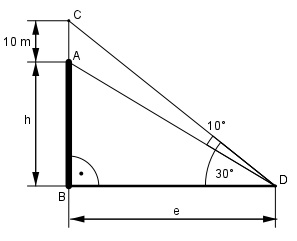

Aufgabe 119 Die Antenne auf einem Funkhaus ist 10 m hoch und unter einem Sehwinkel von 10° zu erkennen. Um die Antennenspitze zu sehen, muss ein Beobachter seinen Blick um 30° heben (Augenhöhe vernachlässigt). Berechnen Sie die Entfernung e des Beobachters vom Turm und die Turmhöhe h.

Im Dreieck BDC: h + 10 tan 30° = -------- |*e e e * tan 30° = h + 10 |-10 h = e * tan30° - 10 Im Dreieck BDA: h tan (30 –10)° = --- | *e e h = e * tan 20° Gleich gesetzt: e * tan 30° - 10 = e * tan 20° |+10 e * tan 30° = e * tan 20° + 10 |-e * tan20° e * tan 30° - e * tan 20° = 10 e * (tan 30° - tan 20°) = 10 e * (0,5774 – 0,364) = 10 e * 0,2134 = 10 | :0,2134 10 m e = --------- = 46,9 m 0,2134 h = e * tan 20° = 46,9 m * 0,364 = 17,1 m